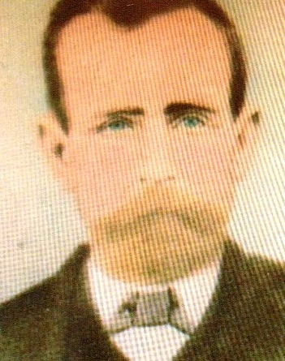
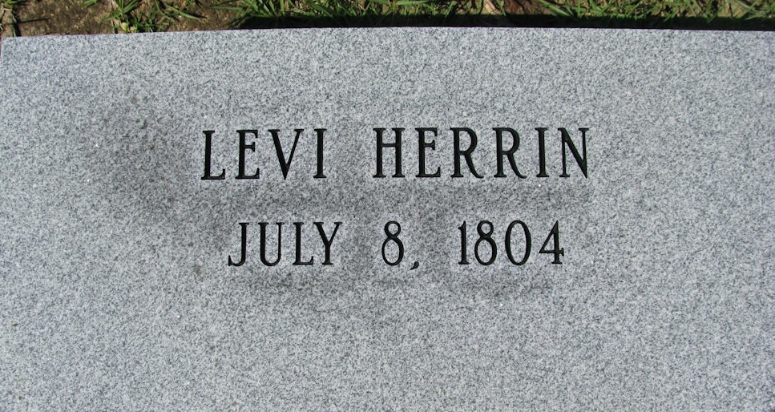

Levi Herrin
1804–1890

Life Events
Born: July 8, 1804 — Clinch, Georgia, United States
Died: September 29, 1890 — Millwood, Clinch, Georgia, United States
Family
Spouse:
Children
Military Service
Conflict: American Civil War
Side: Confederate
Unit: 50th Regiment, Georgia Infantry
Company: Company I
Rank: Private
Biography
Levi Herrin was born on July 8, 1804, in Georgia. He was the son of Herron Herrin and Ann D., according to the family records currently collected.
Levi married Charity Sears, who was born on October 28, 1812. Together, they raised a family in southern Georgia during a period of significant settlement and development.
Among their children were William M. Herrin and Charlotte Herrin. These two children established separate branches of the family that would eventually reconnect through the marriage of their descendants.
William M. Herrin's grandson, William Levi Herrin (1892–1975), married Charlotte Herrin's granddaughter, Laura Etta Palmer (1898–1959), in April 1916 in Clinch County, Georgia. They were third cousins through their common ancestors, Levi Herrin and Charity Sears.
Family records identify possible Confederate military service during the American Civil War as a private in Company I, 50th Georgia Infantry. This service has not yet been independently verified.
Levi died on September 29, 1890, in Millwood, Clinch County, Georgia, at the age of 86.
Photos
No additional photographs have been added.
Grave & Burial

Sources
-
1850 United States Census — Levi Herrin Family
Type: CensusThe 1850 United States Census records Levi Herring and Charity Herring in Ware County, Georgia, with ten younger household members, including William Herring and Charlotte Herring. The census provides evidence of the family's residence in southeastern Georgia and supports Levi's approximate birth year of 1804. The relationships of household members are inferred from family research because the 1850 census did not explicitly record relationships to the household head.
Location: Division 89, Ware, Georgia, United States
Household: Levi Herring Household
Household Members:
- Levi Herring, age 46
- Charity Herring, age 37
- William Herring, age 19
- Hiram Herring, age 16
- Martha Herring, age 15
- Charlotte Herring, age 13
- Richmond Herring, age 11
- Matthew Herring, age 8
- David Herring, age 6
- Jackson Herring, age 4
- Oliff Herring, age 3
- Mildred Herring, age 0
Supports: Levi Herrin and Charity Sears as members of the same household, William Herrin as a child in the Levi and Charity Herring household, Charlotte Herrin as a child in the Levi and Charity Herring household, Georgia as the birthplace of William Herrin, Georgia as the birthplace of Charlotte Herrin
-
1860 United States Census — Levi Herrin Household
Type: Census1860 United States Census for the 4th District, 1030 Georgia Militia District, Coffee County, Georgia, recording the household of Levi Herrin. The original event place is recorded as The 4 Dist 1030 G M, Coffee, Georgia, United States.
Location: 4th District 1030 Georgia Militia, Coffee, Georgia, United States
Household: Levi Herrin Household
Household Members:
- Levi Herrin, age 52
- Charity Herrin, age 46
- Richmond Herrin, age 21
- David Herrin, age 15
- Jackson Herrin, age 14
- Ollif Herrin, age 12
- Mildred Herrin, age 10
- Mary Herrin, age 8
- Charity Herrin, age 2
Supports: Levi Herrin residing in Coffee County, Georgia in 1860, Charity Herrin residing in the same household, Levi Herrin recorded as age 52 and born in Georgia